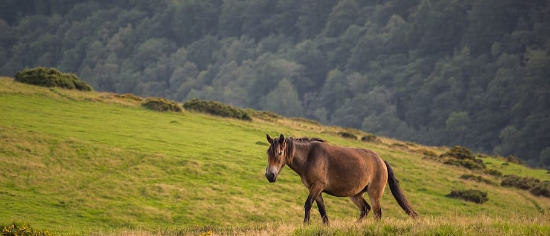
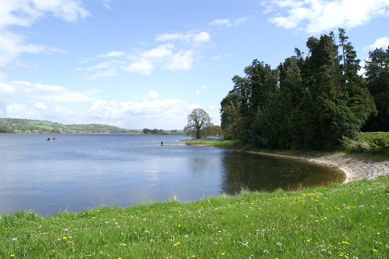

1 / 6

2 / 6

3 / 6

4 / 6

5 / 6

6 / 6

A trail is usually a path, track or unpaved lane or road. In the United Kingdom and the Republic of Ireland path or footpath is the preferred term for a walking trail. The term is also applied, in North America, to routes along rivers, and sometimes to highways.